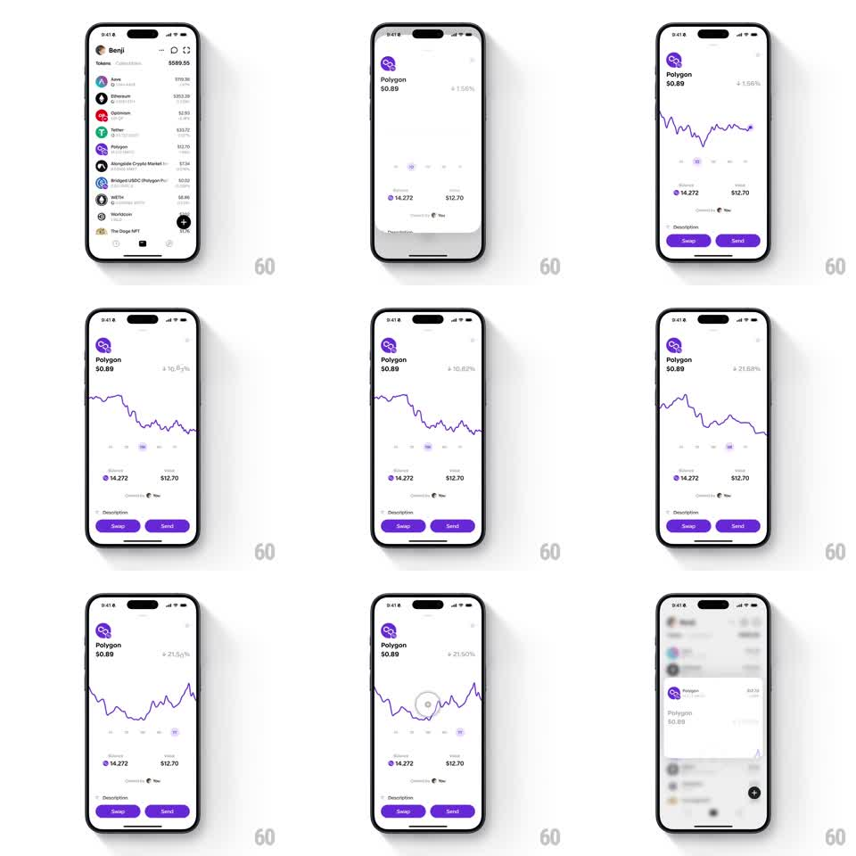

Media
Frame-by-frame

Rebuild this interaction 1:1: Family's token-list to detail morph - tapping the Polygon row in the light token list morphs it into the Polygon detail screen (purple line chart, Balance rows, Swap / Send pills), the chart drawing in and re-morphing across timeframes; dismissing collapses the detail back into the list row.

Rebuild this interaction 1:1: Family's token-list to detail morph - tapping the Polygon row in the light token list morphs it into the Polygon detail screen (purple line chart, Balance rows, Swap / Send pills), the chart drawing in and re-morphing across timeframes; dismissing collapses the detail back into the list row. ## Integration Integration: stack-agnostic spec - springs given as stiffness/damping, timed motions as duration + curve; map every value to your framework and animation library of choice. ## Scene Light list: Benji header, "Tokens $589.55", rows (Aave $119.38, Ethereum $353.39, Optimism, Tether $33.70, Polygon $12.70, Alongside Crypto Market $7.94, Bridged USDC, WETH $6.86, Worldcoin, The Doge NFT), bottom bar with a black "+" button. Detail: purple Polygon logo, "Polygon $0.89", "+1.56%" (red for negatives on other tabs), a purple line chart with timeframe tabs, "Balance 14.272 / $12.70", "Powered by You", "Description" row, purple "Swap" / "Send" pills. ## Motion spec Pattern: shared-element row-to-screen morph with animated chart. - Tap the Polygon row: the row's logo and title fly to the detail header (arc, 300ms, spring ~320/20) while the list fades and blurs behind (200ms); the detail content container slides up (spring ~300/20). - The chart draws in (stroke trim, 600ms, ease-out) from left to right, then the timeframe tabs morph it (control-point interpolation, 500ms) with a scrubber dot riding the line; the percent change rolls digits and flips red/green (200ms). - Balance rows stagger in (50ms apart, translateY 10pt -> 0); the purple Swap / Send pills rise last (200ms). - Back: the chart trims out (300ms), the detail slides down, and the logo/title fly back into the list row (reverse arc, 300ms), the list unblurring as the row re-settles. ## Calibration - Every accent on the detail is Polygon purple - chart stroke, pills, logo. - The morph keeps the row's logo pixel-identical between list and header. ## Reduced motion List and detail crossfade (250ms); chart appears fully drawn. ## Don't miss - The final return frame shows the detail collapsing with the list blurred beneath - blur is part of the transition, both directions. - Timeframe switching reuses the same fluid morph as the standalone chart shot.